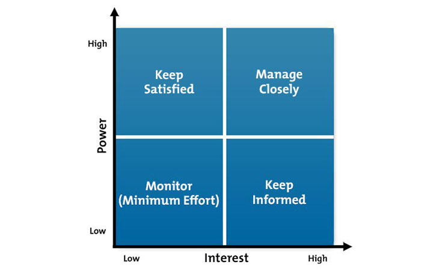
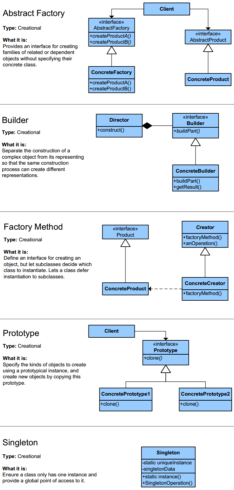
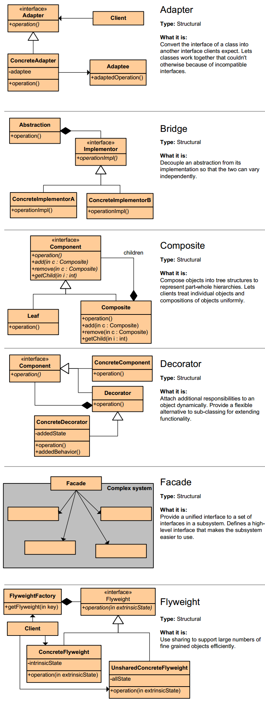
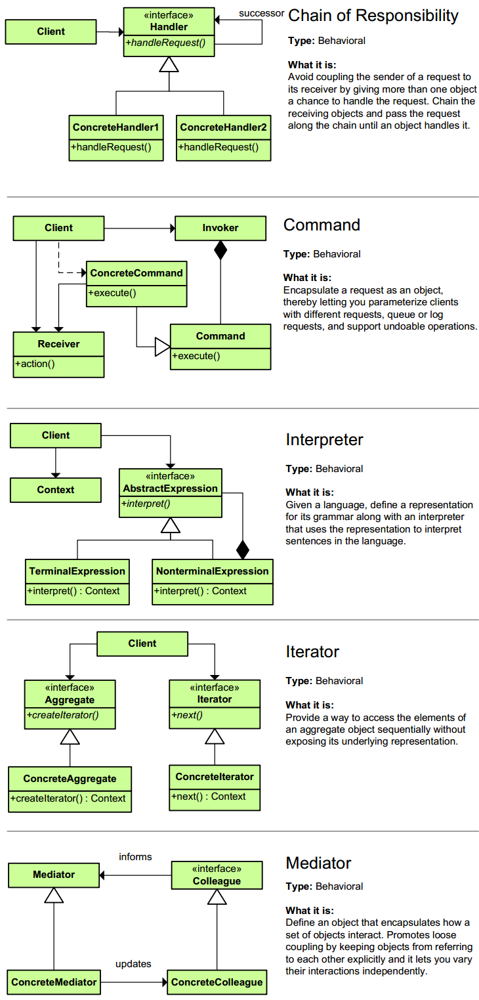
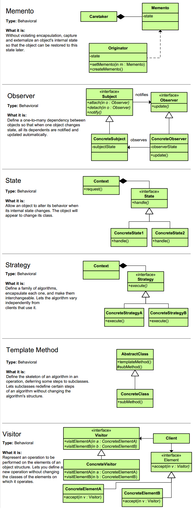
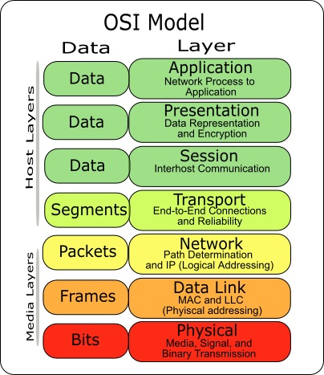
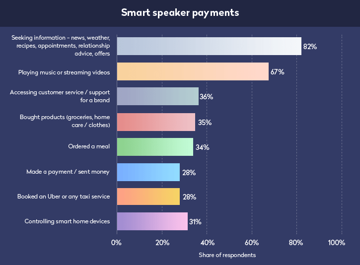

Programming
Building
- Focus
- UX - enables user to promptly identify the exact feature/function they are looking for in the app, correct usage of design elements such as text alignment, image placement, color selection etc. direct the user attention i.e. help them focus on the things that might convert them to buyers
- Usability - easy to navigate, user interface, easy to use and understand: search a product, read reviews, compare it to other products, add to cart, checkout etc. - in as limited steps as possible
- Branding - most tend to overlook, reflection of your brand in terms of logo, company values etc
- Features
- Secure Payment Gateway - Stripe, PayPal, Braintree Payments etc.
- Product Image Quality
- Reviews
- Dedicated "Discounts" Feature - abandoned carts represent significant lost revenue: retargeting users by offering special discounts on the products they left in their cart, retrieve lost sales by offering special discounts
- Product Comparisons
- Push Notifications
- QR Codes
- New Features by Experimenting with Advanced Tech
- layers
- domain - define define units which play the role of entities and business rules and have a direct relationship to domain, most isolated and important layer of software, and it may be used by the application layer to define use cases
- application - defines the actual behavior of application, thus being responsible for performing interactions among units of the domain layer, can delegates the persistence responsibility to the infrastructure layer, can also be used as an adapter to the infrastructure layer: may not know details about specific implementations just what is able to do
- infrastructure - lowest layer of all, boundary to whatever is external to application: database, email services, queue engines, etc.
- input interfaces - holds all the entry points of our application, such as controllers, the CLI, websockets, graphic user interfaces (in case of desktop applications), and so on, should not have any knowledge about business rules, use cases, persistence technologies, and not even about other kinds of logic, should only receive user input (like URL parameters), pass it on to the use case and finally return a response to the user
-
common feature of multilayer applications is the use of the repository pattern to communicate with the database or some other external persistence service (like an API), repository objects are essentially treated as collections, and the layers using them (domain and application) dont need to know which persistence technology lies underneath, the idea here is that the repository interface belongs to the domain layer, and the implementation, in turn, belongs to the infrastructure layer - i.e. the domain only knows about methods and parameters accepted by the repository, makes both layers more flexible, even with regards to testing, since JS doesnt implement the concept of interfaces, we can imagine our own, and based on that create a concrete implementation on the infrastructure layer

Patterns
Creational

Structural

Behavioral


Principles
- clean and modular design, which would be easy to test, debug, and maintain in the future
- DRY (Dont repeat yourself) - dont write duplicate code, instead use abstraction to abstract common things in one place, block of code in more than two places consider making a separate method, or if you use a hard-coded value more than one time make them public final constant
- Encapsulate - encapsulate the code you expect or suspect to be changed in future, easy to test and maintain proper code, making variable and methods private by default and increasing access step by step like from a private to protected and not public, the Factory design pattern is one example of Encapsulation which encapsulates object creation code and provides flexibility to introduce a new product later with no impact on existing code
- Favor Composition over Inheritance (Java example)
- from flexibility point of view - with Inheritance, you have to define which class you are extending in code, it cannot be changed at runtime, but with Composition you just define a Type which you want to use, which can hold its different implementation
- limited code reuse with Inheritance - with Inheritance you can only extend one class, which means your code can only reuse just one class, not more than one, for functionalities from multiple class, use Composition: Authenticater, Authorizer etc, but with Inheritance you just stuck with only class
- unit testing - when you design your class using Inheritance, you must need parent class in order to test child class, there is no way you can provide mock implementation of parent class
- final classes - Composition allows code reuse even from final classes, which is not possible using Inheritance because you cannot extend final class in Java, which is necessary for Inheritance to reuse code
- encapsulation - in case of Inheritance, sub class is dependent upon super class behavior. If parent classes changes its behavior than child class is also get affected. If classes are not properly documented and child class has not used the super class in a way it should be used, any change in super class can break functionality in sub class
- Composition provides better way to reuse code and same time protect the class you are reusing from any of its client, but Inheritance doesnt offer that guarantee
- sometime though Inheritance is necessary, mainly when you are creating class from same family
- Programming for Interface not implementation - will lead to flexible code which can work with any new implementation of the interface
- Delegation principles - dont do all stuff by yourself, delegate it to the respective class, no duplication of code and pretty easy to modify behavior, event delegation is another example of this principle, where an event is delegated to handlers for handling
S.O.L.I.D.
- principles designed for building software out modular, encapsulated, extendable and composable components
- S: Single Responsibility Principle - class, software components and microservices should be responsible for only one thing, put related features together, to change for the same reason and separate features if they will change for different reasons, reduces coupling between the individual component of the software and code
- O: Open-Closed Principle - classes, modules, functions should be open for extension, but closed for modification, write to reuse and not to rewrite, extend child classes rather then overloading parent (use it as base), prevents someone from changing already tried and tested code, ideally, if you are adding new functionality only than your code should be tested
- L: Liskov Substitution Principle - universal methods for classes and sub-classes, and universal call independent of final object
- derived class or subclass must enhance functionality, but not reduce them
- subtypes must be substitutable for supertype, methods or functions which uses superclass type must be able to work with the object of subclass without any issue
- IF super-class (Animal) has a method that accepts a super-class type (Animal) parameter, its sub-class(Pigeon) should accept as argument a super-class type (Animal type) or sub-class type(Pigeon type), IF super-class returns a super-class type (Animal), its sub-class should return a super-class type (Animal type) or sub-class type(Pigeon)
- closely related to the Single responsibility principle and Interface Segregation Principle
- I: Interface Segregation - fine grained interfaces that are client specific
- clients should not be forced to depend upon interfaces that they do not use: sub-classes should not be forced to depend on methods that they do not need or use, interfaces should perform only one job, any extra grouping of behavior should be abstracted away to another interface
- happens mostly when one interface contains more than one functionality, and the client only needs one functionality and no other
- D:Dependency Injection or Inversion - dependency should be on abstractions not concretions, classes should less be dependent of services they are using, expose universal interfaces
- High-level modules should not depend upon low-level modules, both should depend upon abstractions
- Abstractions should not depend on details, details should depend upon abstractions
- any class which is injected by DI framework is easy to test with the mock object and easier to maintain because object creation code is centralized in the framework and client code is not littered with that

OSI layers


Trends
- AR/VR
- Mobile AR disruption
- AR in marketing & advertising
- AR in healthcare
- AR in manufacturing
- IoT/Smart things
- Smart homes & smart areas
- Routers equipped with more securities
- Self-driving cars
- IoT in healthcare
- AI/machine learning
- AI automated DevOps through AIOps
- AI-enabled chips
- Automated machine learning
- Interoperability among neural networks
- Beacons
- Mobile payments beacons
- AI-enabled chips
- Automated machine learning
- Beacon treasure hunting
- Cloud
- Quantum computing
- Hybrid cloud solutions
- Evolution of cloud services and solutions
- Mobile wallets
- Over 2 billion mobile wallet users
- More secure mobile wallets
- Contactless payment
- Blockchain
- beyond bitcoin & smart contracts
- Asset tokenization
- BAAS (Blockchain-as-a-service)
- Trading on crypto-currencies exchange
- Crypto space and gaming
- Wearables
- Wearable technology claims first spot in fitness trends 2019
- Increase in wearable watches causes decrease in sale of traditional watches.
- On-demand development apps
- More focus on B2B sector
- More industries to embrace On-demand applications

Back to Main Page